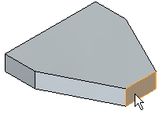
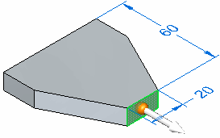
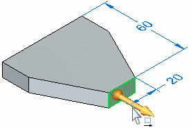
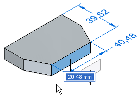
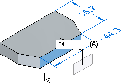

Move part geometry using the steering wheel
In a synchronous part, sheet metal, assembly, or subdivision model, you can use the Select command and the steering wheel to move part geometry.
You also can rotate part geometry using the steering wheel.
-
Choose Home tab→Select group→Select.

-
Position the cursor over the face you want to move, and when it highlights, click to select it.

The axis and origin of the steering wheel handle display. Any dimensions that are attached to the face also display.

The command bar updates to show the default option, Move.

-
Position the cursor over the axis on the steering wheel, and click to select it.

-
Specify the extent of the move. Do one of the following:
-
Move the cursor until the face is positioned approximately where you want it, then click.

-
To define the extent precisely, type a value in the dynamic input box (A), and then press the Enter key.

-